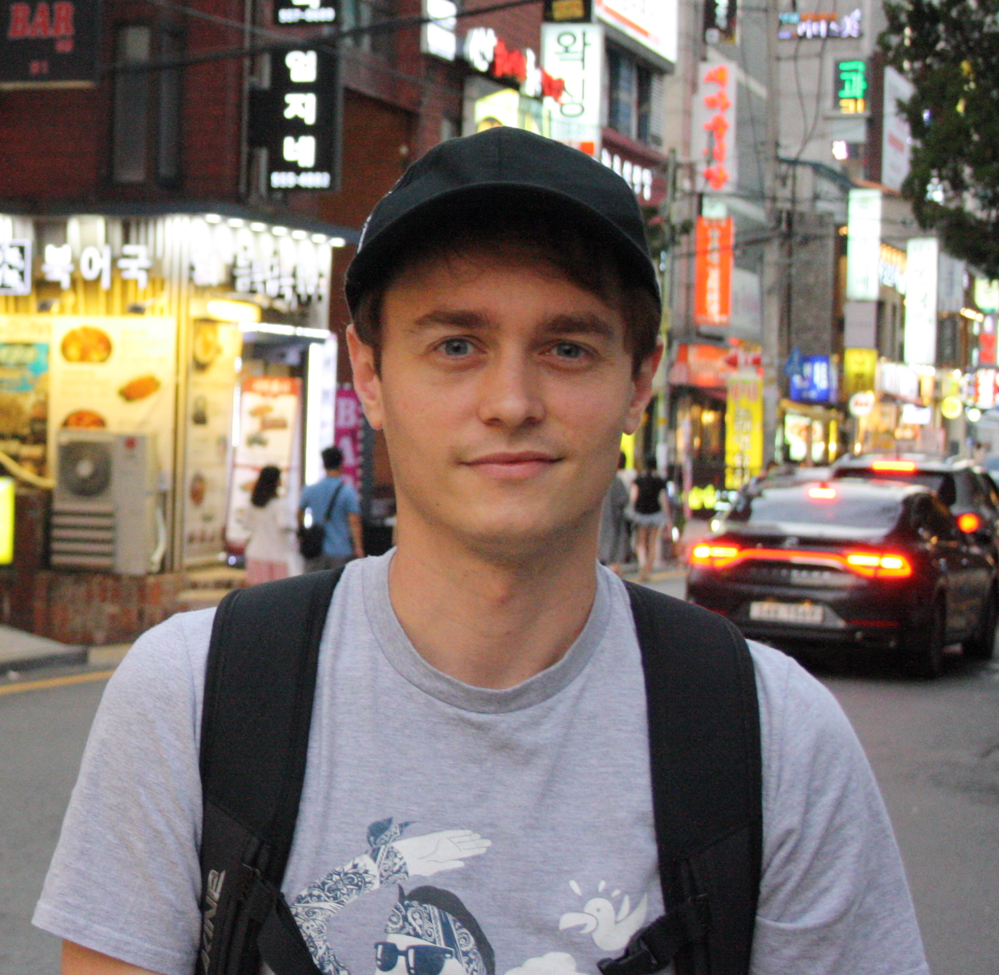

About Me

I am a Reader (~Associate Professor) and UKRI Future Leaders Fellow in the Department of Informatics at King's College London.
I am a human–computer interaction and accessibility researcher. I work with people with communication disabilities to develop interaction techniques that make existing technologies more accessible and support richer interpersonal communication.
I also maintain a page on CHI statistics by year: 2025, 2026.
News
- Our work on Advokit won the Social Impact Recognition Award at ASSETS 2026!
- Two new PhD students, Marci Talbot and Adrian Heffelman, have joined the group. Welcome!
- Our work on Advokit has been nominated for a Social Impact Award at ASSETS 2026
- I have been promoted to Reader. This means I am now legally permitted to read
- We have 2 papers accepted to ASSETS –– one on Advokit, a platform for accessible benefits applications, and another on tangible programming for visually impaired learners.
- I will be heading out to DIS in Singapore to present our paper on rethinking media accessibility and design with Media Practitioners
- My PhD student Humphrey won the ACM SIGCHI Outstanding Dissertation Award!
- We have 2 papers and a poster accepted to ACM CHI 2026 on technology for accessible audio and online services. See you in Barcelona!!
- I am chuffed to announce that I have been awarded a ~£2M UKRI Future Leaders Fellowship I am hiring soon. More info here.
- We have 1 paper and an experience report accepted to ASSETS 2025. I will be heading out to Denver at the end of October!
- PhD students Xi Hu and Alexandre Nevsky both led papers which got accepted at DIS 2025. Preprints soon!
- PhD student Carlota got an Honourable Mention at CHI! See more in publications
- I am going to CHI in Japan! 3 pre-prints of accepted papers can be found in my publications
- We were awarded ~£100k from The Chartered Society of Physiotherapy to develop technology for post-stroke physical rehabilitation
- We were awarded ~£50k from the EPSRC IncludePlus to work on aphasia-friendly public services
- I attended ACM ASSETS 2024 in St John's, Newfoundland, Canada, where our paper was a Best Paper Nominee (top 5 of 226 submissions)
- As of August 2024, I am a Senior Lecturer (~Associate Professor)
- We have had two papers accepted to ASSETS. These are available in the publications section
- I will be going to CHI 24, where we will present 3 papers and a late-breaking work (see publications)
- Work led by my PhD student Humphrey won a Best Student Paper at ASSETS 2023
- Our NIHR Programme Development Grant was funded!
- Work led by my PhD student Sacha won a Best Paper Honourable Mention at IMX 2023
- Work led by my PhD student Humphrey won a Best Paper at CHI 2023
- My EPSRC New Investigator Award `CA11y' was funded! Website here